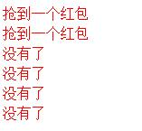

采用多线程模拟多人同时抢红包。服务端将玩家发出的红包保存在一个队列里，然后用Job定时将红包信息推送给玩家。每一批玩家的抢红包请求，其实操作的都是从队列中弹出的第一个红包元素，但当前的红包数量为空的时候，自动弹出下一个红包（如果有的话）。
关键思想：
1.抢红包涉及多人并发操作，需要做好同步保证多线程运行结果正确。
2.由于同时在线人数大，从性能方面考虑，玩家的发红包请求不必及时响应，而由服务端定时执行发红包队列。
下面是主要的代码和实现逻辑说明
1.创建一个类，表示红包这个实体概念。直接采用原子变量保证增减同步。Java的原子变量是一种精度更细的同步机制，在高度竞争的情况下，锁的性能将超过原子变量的性能，但在更真实的竞争情况，原子变量享有更好的性能。
public class SpringGift {
private String role;
private AtomicInteger gift;
public String getRole() {
return role;
}
public void setRole(String role) {
this.role = role;
}
public AtomicInteger getGift() {
return gift;
}
public void setGift(AtomicInteger gift) {
this.gift = gift;
}
public int getRemainCount(){
return this.gift.get();
}
}2.采用多线程模拟多人同时抢红包。服务端将玩家发出的红包保存在一个队列里，然后用Job定时将红包信息推送给玩家。每一批玩家的抢红包请求，其实操作的都是从队列中弹出的第一个红包元素，但当前的红包数量为空的时候，自动弹出下一个红包（如果有的话）。
public class Test {
public static ConcurrentLinkedQueue<SpringGift> queue;
public static SpringGift currGift;
public static AtomicInteger count = new AtomicInteger();
static class myThread implements Runnable{
public void run(){
handleEvent();
}
}
public static void main(String[] args) throws Exception {
queue = new ConcurrentLinkedQueue<SpringGift>();
for(int i =0;i<3;i++){
SpringGift gift = new SpringGift();
gift.setRole("role"+i);
gift.setGift(new AtomicInteger(50));
queue.add(gift);
}
myThread mythread = new myThread();
for(int i=0;i<1000;i++){
new Thread(mythread).start();
}
System.err.println("总共收到"+count.get());
}
private static SpringGift getGift(){
//防止多条线程同时弹出队首
synchronized (queue) {//若没有加锁，打印的count总数不对！！！！
if(currGift == null || currGift.getRemainCount() <=0){
currGift = queue.poll();
}
}
return currGift;
}
public static void handleEvent(){
try{
SpringGift obj = getGift();
if(obj == null || obj.getRemainCount() <= 0){
System.err.println("没有了");
return ;
}
if(obj !=null && obj.getGift().getAndDecrement() >0 ){
System.err.println("抢到一个红包");
count.getAndIncrement();
}
Thread.sleep(500);//模拟处理其他操作
}catch(Exception e){
e.printStackTrace();
}
}
}运行结果部分截图如下

需要注意的是，getGift()这个方法，由于是自动弹出队首元素，必须做好同步机制，否则，当多个请求同时操作某一个红包的最后一次剩余时，会造成总的红包数量不正确。
（将加锁的代码注释后，会发现打印的总数量有可能不正确了！）